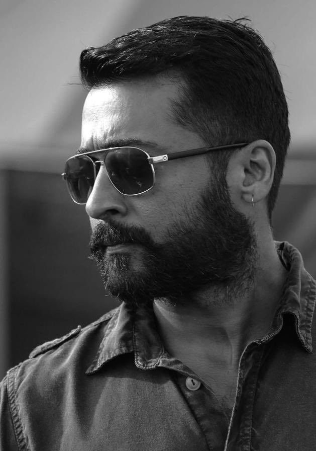

|  |
Suriya, born Saravanan Sivakumar on July 23, 1975, is a prominent Tamil actor and producer known for his versatile performances. He made his debut in Nerukku Ner (1997) and gained widespread recognition with films like Kaakha Kaakha, Ghajini, and Singam. Suriya is celebrated for his intense roles and dedication to his craft, often undergoing physical transformations for his characters. He has won several awards, including Filmfare and Tamil Nadu State Film Awards. Off-screen, Suriya is known for his philanthropic work through the Agaram Foundation, which focuses on education for underprivileged children. |